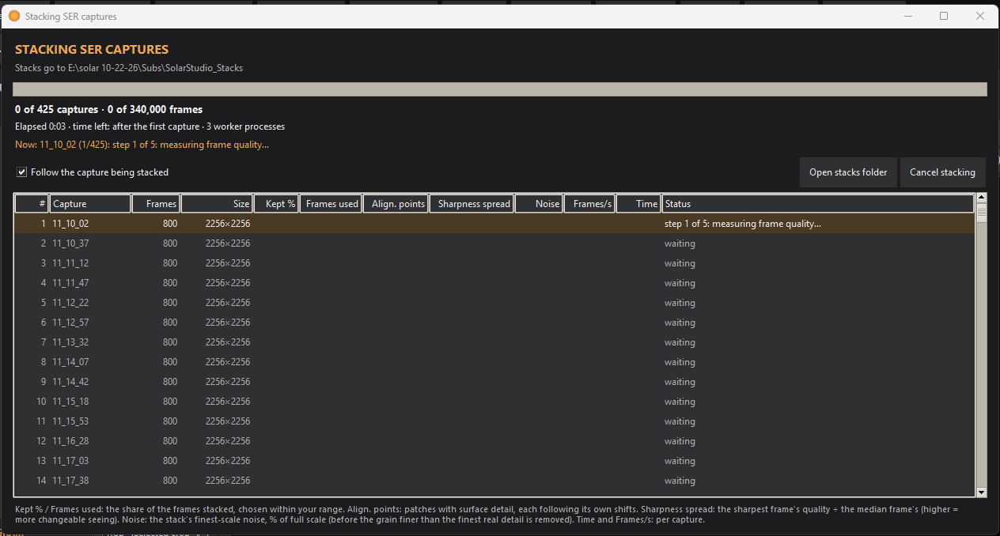
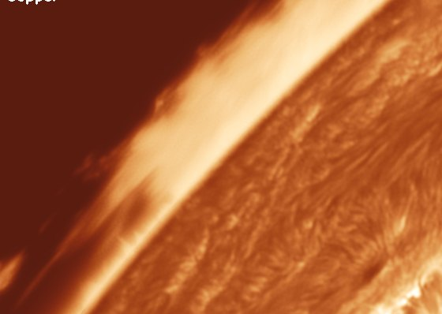
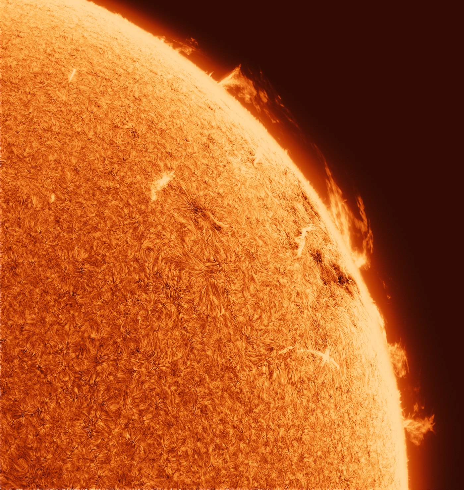
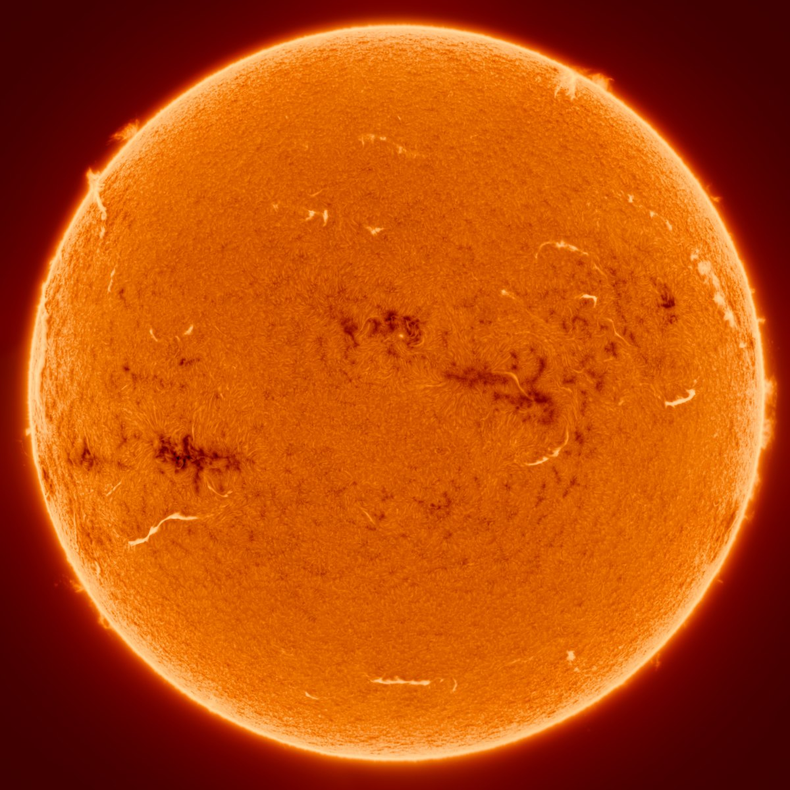
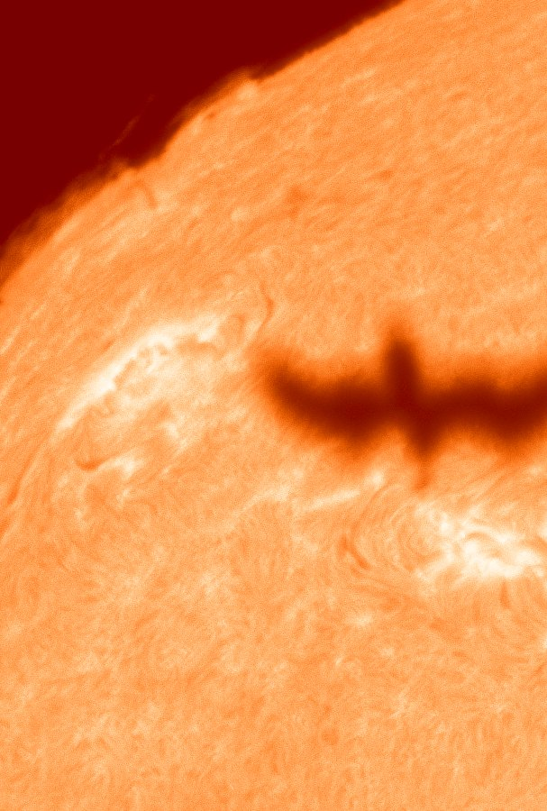
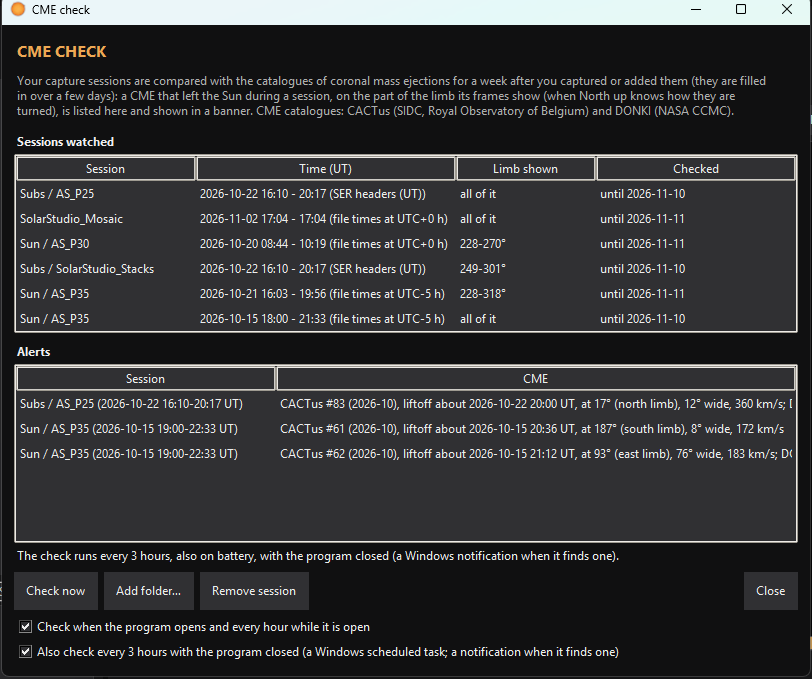
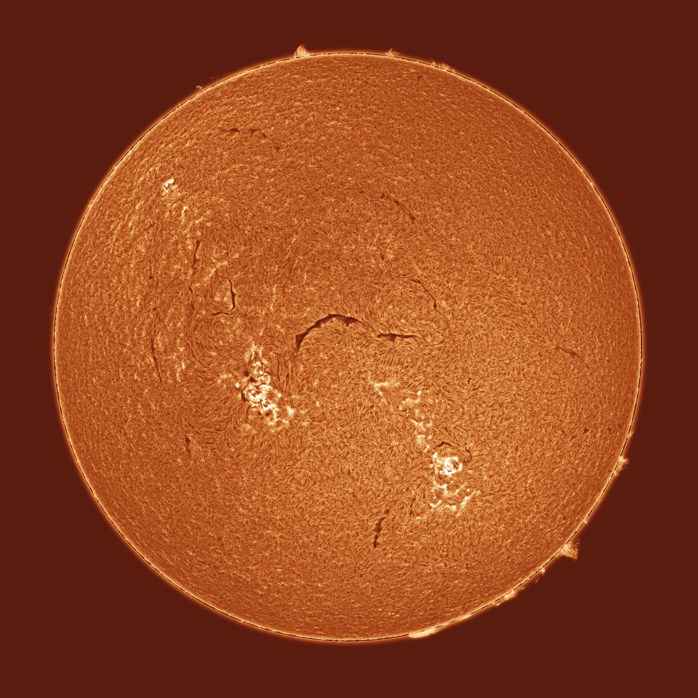

Everything between the capture and the video
S.U.N. Studio is one program for the whole job: stacking, choosing and aligning frames, grading, overlays and export. Hover over any control in the program to see what it does.
A SER and AVI stacker made for timelapses
Point it at a folder of mono SER or uncompressed AVI videos and it makes one stack per capture, in parallel on every core.
- A range, not a fixed share: you set it (15–80 % by default), and for each capture it stacks the candidate shares twice from alternate frames and keeps the one whose finest real detail stands highest above the noise
- Each patch of the disk takes its own sharpest frames, so a moment of good seeing in one corner is used there
- Each stack sits at the capture's mean geometry, so the stacks don't wobble from one capture to the next
- Drizzle at 1.5×, 2× or 3× for undersampled setups
- Darks, flats and bias, including master flats saved as FITS
- Writes the capture's date and time into every stack

Only the good frames, held still
Analyze & Recommend scores every frame for seeing, rejects soft and cloudy ones, picks a reference and suggests settings. One Undo puts it all back.
- Alignment for full disks, limb close-ups and rotating fields
- Limb Lock and Surface Lock to hold the part that matters
- The difference against the reference, to check the alignment by eye

Curves made for the Sun
Start from a preset, press Auto stretch, then fine-tune. Everything that changes brightness works in grayscale, and the palette only picks a colour for each level.
- Auto stretch: positive or inverted, worked out from your frame's sky, prominences and disk
- An editable tone curve, Levels and Primaries, with the clipping shown per colour channel
- Lucy–Richardson, wavelets and Match detail to the sharpest frames
- Turn any step off and on without losing its settings, compare A/B, or Reset all
- Profiles you can save, share and import

 PositiveInverted
PositiveInverted
Faint prominences, a bright disk, both kept
The prominence tools work at the limb before the curve, so you can bring up faint structure off the limb without washing out the surface.
- Auto prominences, Prominence stretch and brightness
- Chromosphere rim, Halo cleanup, Limb darkening correction
- An off-limb curve and a soft Sky black
- An occulting disk, if you want the prominences alone

Smooth from the first frame to the last
- In-between frames and even pacing across gaps in the capture
- De-shimmer, and deflicker measured on the aligned frames
- Render & Review: play the finished frames before you export
- Text overlays with the time of each frame
Panels into one full disk
Mosaic… places overlapping panels by the surface detail they share, then joins them.
- Evens out the panels' brightness across the limb darkening
- Balances the skies so no seam shows at a strong stretch
- Named by the panels' capture time, so North up finds the date

Where you are on the Sun
North up… matches your frame with a public full-disk H-alpha image of the same time, so the program knows which way solar north is.
- Active region labels from the daily Solar Region Summary, with a locator and N / E / S / W
- A heliographic grid, with P, B0 and L0
- Measure heights and track a prominence's rise, in km or miles, and in Earth diameters
- The Earth to true scale beside the Sun

Caught something crossing the Sun?
While it stacks, the program looks for silhouettes crossing the disk (birds, aircraft, the ISS) and makes a clip, a composite and the frames of each one.
- Dark and faint grey silhouettes
- The transit frames are left out of the stack
- Or only look for transits, without stacking

Did a CME leave while you were imaging?
For a week after a session, the program checks the public coronal mass ejection catalogues for one that left the Sun at the time and place you captured, and tells you if one did.

Video, GIF, frames or a still
- MP4 and GIF, named by the date and the span they cover
- 16-bit TIFF frames for further work
- Save Still… for a single frame, with its labels if you like
- Batch export for several sessions in a row
